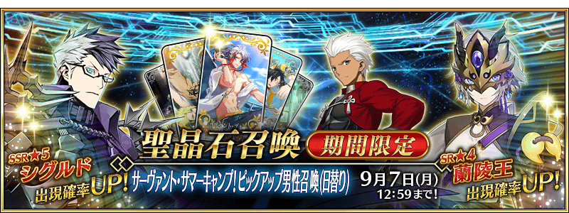
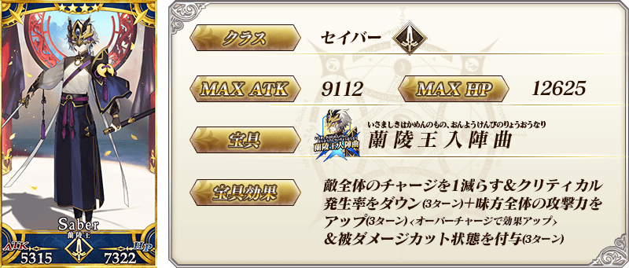
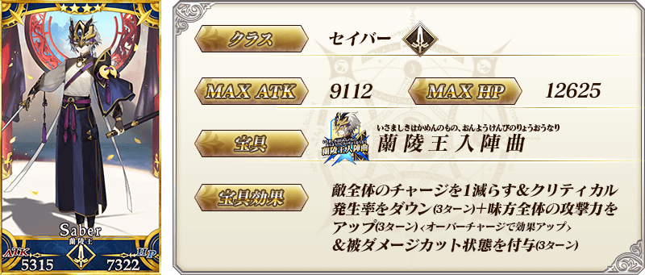
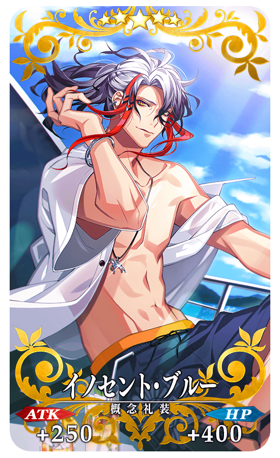
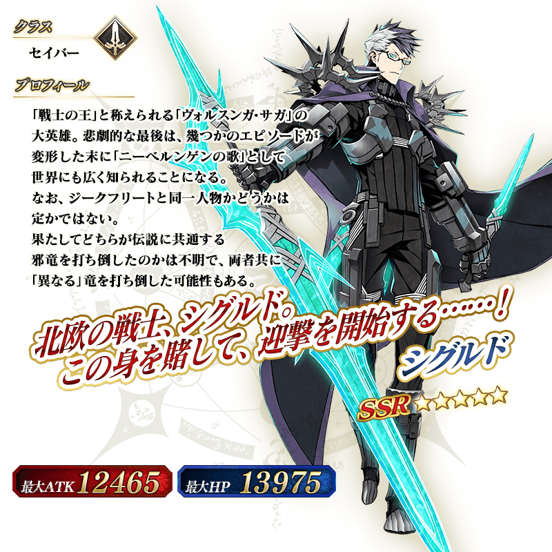
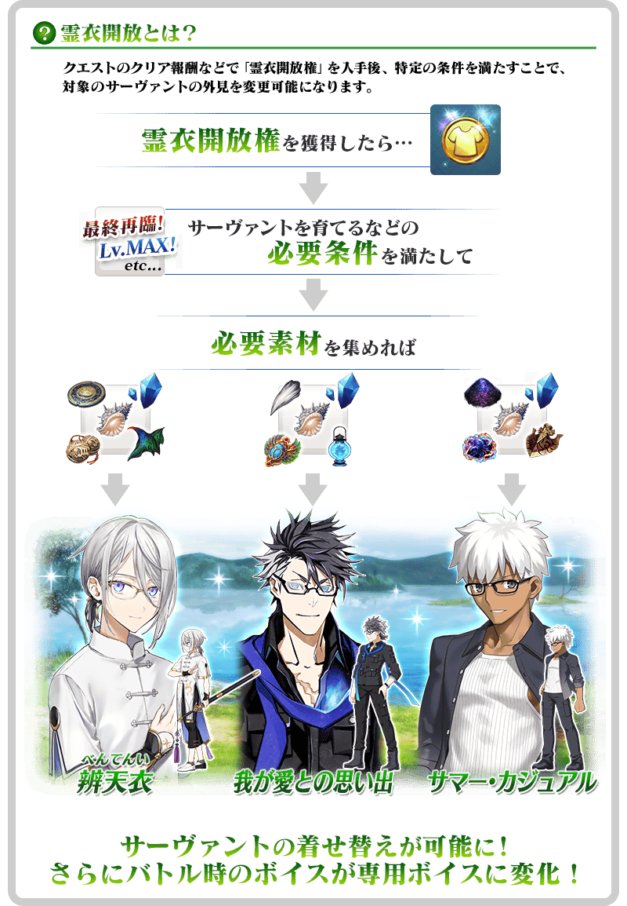
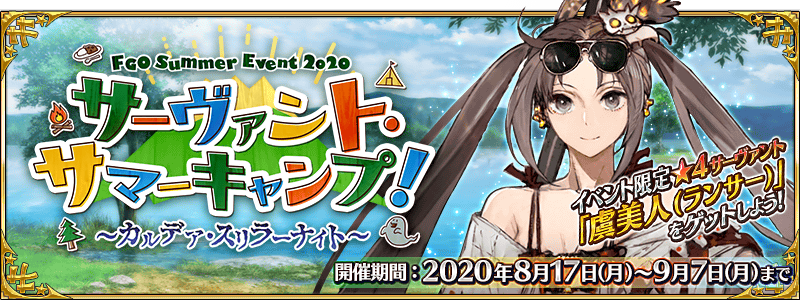
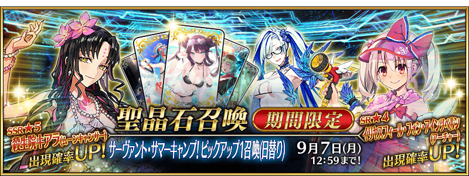

◆「從者夏令營！Pick Up男性召喚(每日交替)」期間◆
期間:2020年8月17日(一) 17:00～9月7日(一) 11:59
舉辦期間限定「從者夏令營！Pick Up男性召喚(每日交替)」！
從期間限定活動「從者夏令營！ ～迦勒底驚悚之夜～」關聯的從者之中，下述的期間限定從者常駐Pick Up！ ・★5(SSR)西格魯德
另外，下述的從者以每日交替Pick Up！ ・★4(SR)蘭陵王 ・★4(SR)Emiya
並且，下述的期間限定概念禮裝常駐Pick Up！ ・★5(SSR)イノセント・ブルー ・★4(SR)クライミング・バトル ・★3(R)マブダチ・バーベキュー 裝備上述3種概念禮裝的話，在期間限定活動「從者夏令營！ ～迦勒底驚悚之夜～」中會提升活動道具的掉落獲得數。
Pick Up期間中，Pick Up對象從與概念禮裝的出現機率提升！
詳情請在聖晶石召喚畫面左下的召喚詳細確認。
11次召喚中確定1張★4(SR)以上和確定1位★3(R)以上的從者！ ※確定★4(SR)以上包含從者和概念禮裝。 ※本頁面皆為開發中圖片。會有與實際圖片相異的情況。
◆有關從者的注意◆
※下述的從者在Pick Up期間結束後不會追加到故事召喚。
・★5(SSR)西格魯德
※下述的從者在Pick Up期間結束後仍會在故事召喚被抽出。
・★4(SR)蘭陵王
・★4(SR)Emiya
◆有關概念禮裝的注意◆
※請注意會做為抽出對象的期間限定概念禮裝只限下述的概念禮裝，其他的期間限定概念禮裝為抽出對象外。
・★5(SSR)イノセント・ブルー
・★4(SR)クライミング・バトル
・★3(R)マブダチ・バーベキュー
※下述的概念禮裝，Pick Up期間中也能靠友情點數召喚獲得。
・★3(R)マブダチ・バーベキュー
※請注意在自動變還設定登錄★3(R)概念禮裝的情況，下述的概念禮裝會是自動變還的對象。
・★3(R)マブダチ・バーベキュー
◆「從者夏令營！Pick Up男性召喚(每日交替)」Pick Up內容◆
| Pick Up期間 | Pick Up內容 | |
|---|---|---|
| 全天Pick Up | 每日交替Pick Up | |
| 8/17(一) 17:00～ 8/18(二) 22:59 |
★5 西格魯德 | ★4 蘭陵王 ★4 Emiya |
| 8/18(二) 23:00～8/19(三) 22:59 | ★4 蘭陵王 | |
| 8/19(三) 23:00～8/20(四) 22:59 | ★4 Emiya | |
| 8/20(四) 23:00～8/21(五) 22:59 | ★4 蘭陵王 | |
| 8/21(五) 23:00～8/22(六) 22:59 | ★4 Emiya | |
| 8/22(六) 23:00～ 8/27(四) 22:59 |
★4 蘭陵王 ★4 Emiya |
|
| 8/27(四) 23:00～ 8/29(六) 22:59 |
★4 Emiya | |
| 8/29(六) 23:00～ 8/31(一) 22:59 |
★4 蘭陵王 | |
| 8/31(一) 23:00～ 9/2(三) 22:59 |
★4 Emiya | |
| 9/2(三) 23:00～ 9/4(五) 22:59 |
★4 蘭陵王 | |
| 9/4(五) 23:00～ 9/7(一) 11:59 |
★4 蘭陵王 ★4 Emiya |
|
※請注意會以每日交替變更Pick Up的從者。


 ※上述「★5(SSR)西格魯德」的卡面為靈基再臨第3階段。
※上述「★5(SSR)西格魯德」的卡面為靈基再臨第3階段。

 
※上述「★4(SR)蘭陵王」的卡面為靈基再臨第2階段。

※上述「★4(SR)蘭陵王」的卡面為靈基再臨第2階段。


|  |
★★★★★SSR |

|
★★★★SR
|


|
★★★R |

 ※上述「★5(SSR)西格魯德」的立繪為靈基再臨第2階段。
做為期間限定活動「從者夏令營！ ～迦勒底驚悚之夜～」的報酬，「★5(SSR)西格魯德」「★4(SR)蘭陵王」「★4(SR)Emiya」的靈衣開放權登場！
本活動中可靠活動道具交換入手上述靈衣開放權。
另外，想開放靈衣的話，除了靈衣開放權外再加上必須滿足一些開放條件。
◆有關靈衣開放權的注意◆
※「★5(SSR)西格魯德」「★4(SR)蘭陵王」「★4(SR)Emiya」的靈衣開放權只限期間限定活動「從者夏令營！ ～迦勒底驚悚之夜～」的活動道具交換期間才能入手。
※「★5(SSR)西格魯德」「★4(SR)蘭陵王」「★4(SR)Emiya」的靈衣會配合外觀變化一部份語音。
※請注意未持有「★5(SSR)西格魯德」「★4(SR)蘭陵王」「★4(SR)Emiya」的情況，可入手靈衣開放權。但無法進行靈衣開放。
 ※8月24日(一) 17:00圖片修正

「靈衣開放」是自強化畫面進行。
※「★4(SR)蘭陵王」的靈衣「辨天衣」戰鬥角色不會戴眼鏡。 ※「靈衣開放」後會自動切換戰鬥角色和圖示。若想回到「靈衣開放」前的狀態和變成其他再臨階段的情況，可自從者詳細畫面變更。 ※進行「靈衣開放」不會讓職階和能力等有所變化。

介紹開放新靈衣「與吾之愛的回憶(我が愛との思い出)」「辨天衣」「夏日休閒(サマー・カジュアル)」的「★5(SSR)西格魯德」「★4(SR)蘭陵王」「★4(SR)Emiya」寶具演出！
在「Fate/Grand Order」官方網站內的公告中，以影片公開寶具演出，敬請確認。
【與吾之愛的回憶】
【辨天衣】
【夏日休閒】
介紹在本召喚Pick Up的3位從者寶具演出！
在「Fate/Grand Order」官方網站內的公告中，以影片公開寶具演出，敬請確認。
【★5(SSR)西格魯德】
※8月24日(一) 17:00影片修正
【★4(SR)蘭陵王】
【★4(SR)Emiya】
其他還有，期間限定活動「從者夏令營！ ～迦勒底驚悚之夜～」和期間限定「從者夏令營！Pick Up1召喚(每日交替)」同時舉辦！
關於詳情，請自下述橫幅確認。
■「從者夏令營！ ～迦勒底驚悚之夜～」詳細情報 
■「從者夏令營！Pick Up1召喚(每日交替)」詳細情報 